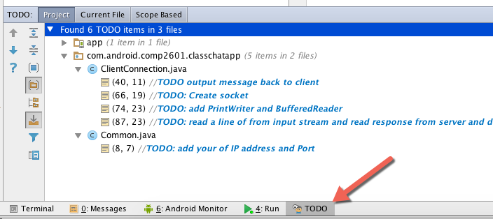
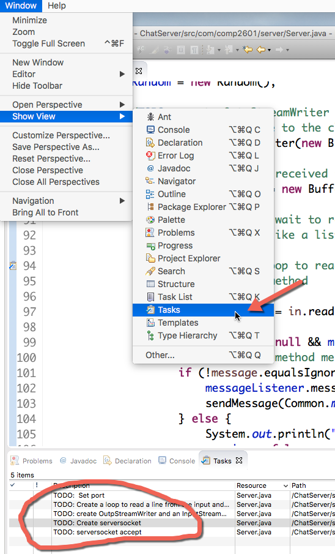
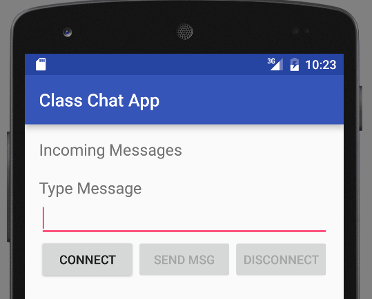

COMP 2601 Winter 2016
Ex 12 Client-Server with Sockets
© L.D. Nel 2016
Revisions -none yet
Description:
For this exercise you will need a java programming IDE, like Eclipse, installed on you computer.
The purpose of this exercise is to familiarize you with using sockets to establish connections between a client (android app) and a server (implemented in java).
In the previous node.js based server exercises there was no lasting connection between the client and the server. After the server responded to the client's request the connection was lost.
Sockets allow you to established a connection between an client and server, much like a telephone call, that allow messages to flow between them until the connection is closed by either end. While the connection is active the client and server can either communicate in a request-response manner or it can be programmed so that client and server can send each other unsolicited (asynchronous) messages. In this exercise we will use only request-response messaging while the connection is active. That is, the client will send requests and the server will respond to each one. The server will not send unsolicited messages to the client.
The server will be built in java. The demo code provides the server skeleton code as an eclipse project. The client will be an android app. You can test the client server on localhost by having your android app access the server on the special IP address 10.0.2.2.
You need to demonstrate your exercise to the TA or Prof. before you leave the class to get credit for it. Marks: 2 or completion, 1 for partial progress, 0 for no show or no progress. (A mark of 1 can be upgraded to 2 is show us your completed work within one week of this exercise.)
Instructions:
Preliminary:
It is common for programmers to leave themselves //TODO comments in their code. The demo code for this exercise has such //TODO comments to indicate where you need to make modifications. You can reveal their locations in android studio and eclipse as follows.
In android studio:

In eclipse:

Problem 1 -A Java Socket-based Server.
Open the demo code ChatServer in eclipse.
Reveal the //TODO list.
Here is the skeleton code for the server showing all the //TODO you need to complete.
/** * The class extends the Thread class so we can * receive and send messages at the same time */ public class Server extends Thread { //TODO: Set port private static final int SERVERPORT = 0; //FOR NOW private boolean running = false; private PrintWriter mOut; private OnMessageReceived messageListener; private Random mRandom; //Declare the interface. //The method messageReceived(String message) must be implemented //in the Server class. public interface OnMessageReceived { public void messageReceived(String message); } public static void main(String[] args) { //Create server and start it. Provide the callback to print //messages received new Server(new Server.OnMessageReceived() { @Override //this method declared in the interface from Server class is //implemented here //this method is actually a callback method, because it will //run every time when it will be called from //Server class (at while) public void messageReceived(String message) { System.out.println("\n" + message); } }).start(); } /** * Constructor of the class * @param messageListener listens for the messages */ public Server(OnMessageReceived messageListener) { this.messageListener = messageListener; } /** * Method to send the messages from server to client * @param message the message sent by the server */ public void sendMessage(String message){ if (mOut != null && !mOut.checkError()) { mOut.println(message); mOut.flush(); } } @Override public void run() { super.run(); running = true; try { System.out.println("S: Connecting..."); //TODO: Create serversocket //create a server socket. //A server socket waits for requests to //come in over the network. ServerSocket serverSocket; //for now //TODO: serversocket accept //create client socket... the method //accept() listens for a connection to be //made to this socket and accepts it. Socket client; //for now System.out.println("S: Receiving..."); try { mRandom = new Random(); //TODO: create OutpStreamWriter and an //InputStream reader. //Order of creation matters //sends the message to the client mOut = null; //for now //read the message received from client //using a BufferedReader BufferedReader in; //for now //In this while we wait to receive messages from client //(it's an infinite loop) //listening for messages //TODO: Create a loop to read a line from the input //and the send a reply back to client using the //sendMessage method while (running) { String message = in.readLine(); } } catch (Exception e) { System.out.println("S: Error"); e.printStackTrace(); } finally { sendMessage("Disconnected"); client.close(); System.out.println("S: Done."); } } catch (Exception e) { System.out.println("S: Error"); e.printStackTrace(); } } }
When completed you should be able to launch the server. There will be a S: Connecting... message printed on the eclipse console.
Problem 2 - Android Socket-based Client.
Open the ClassChatApp android project in android studio, and reveal the //TODO list.
Here is the structure of the code showing most of the //TODO items. There are a few more simple ones elsewhere in the code.
public class ClientConnection {
private String serverMessage;
private final String TAG ="ClientConnection";
private OnMessageReceived mMessageListener = null;
private boolean mRun = false;
PrintWriter mOut;
BufferedReader mIn;
//Declare the interface. The method messageReceived(String message)
//must be implemented in the MyActivity
//class at on asynckTask doInBackground
public interface OnMessageReceived {
public void messageReceived(String message);
}
/**
* Constructor of the class.
* OnMessagedReceived listens for the messages
* received from server
*/
public ClientConnection(OnMessageReceived listener) {
mMessageListener = listener;
}
/**
* Sends the message entered by client to the server
* @param message text entered by client
*/
public void sendMessage(String message){
//TODO output message back to client
Log.e(TAG, "Message being sent: " + message);
}
public void stopClient(){
sendMessage("Disconnect");
mRun = false;
}
public void run() throws ConnectException {
mRun = true;
try {
//here you must put your computer's IP address.
InetAddress serverAddr = InetAddress.getByName(Common.mIPAddress);
Log.e(TAG, "C: Connecting...");
//TODO: Create socket
//create a socket to make the connection with the server
Socket socket; //for now
try {
//TODO: add PrintWriter and BufferedReader
//send the message to the server
mOut = null; //for now
Log.e(TAG, "C: Sent.");
Log.e(TAG, "C: Done.");
//receive the message which the server sends back
mIn = null; //for now
//in this while the client listens for the
// messages sent by the server
//TODO: read a line of from input stream and read
// response from server and display it using
// the messageRecieved method
while (mRun) {
serverMessage = mIn.readLine();
}
Log.e(TAG, "S: Received Message: '" + serverMessage + "'");
} catch (Exception e) {
Log.e(TAG, "S: Error", e);
} finally {
//the socket must be closed. It is not possible
// to reconnect to this socket after it is closed,
// which means a new socket instance has to be created.
socket.close();
}
} catch (ConnectException e) {
Log.e(TAG, "C: Error", e);
throw e;
} catch (IOException e){
e.printStackTrace();
Log.e(TAG, "IOException");
}
Log.e(TAG, "Thread Done");
}
}
When you have completed this client you should be able to launch it and see the interface below. You should now be able to connect to the server and "chat" with it. The server will respond to your messages in a meaningful way using sophisticated AI.

When you have completed these problems demonstrate your code to the TA or Prof. to get credit for the tutorial.